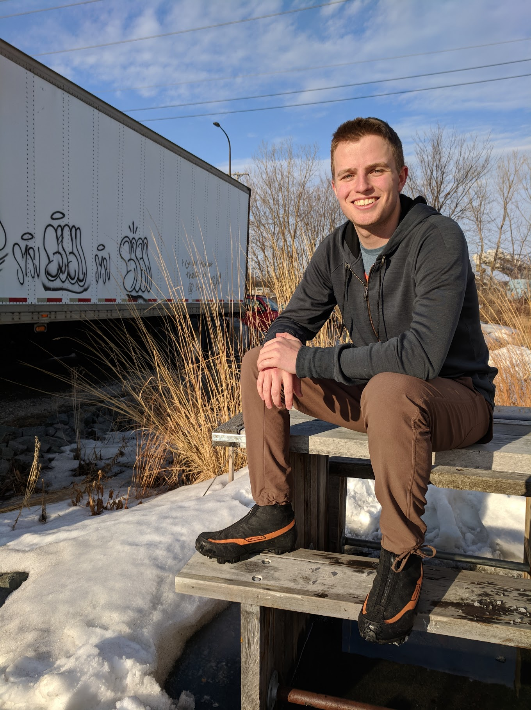
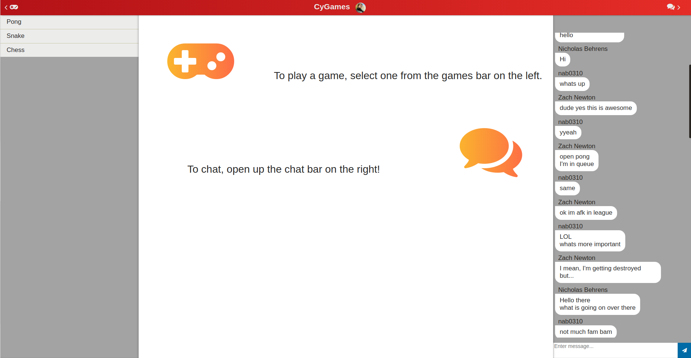
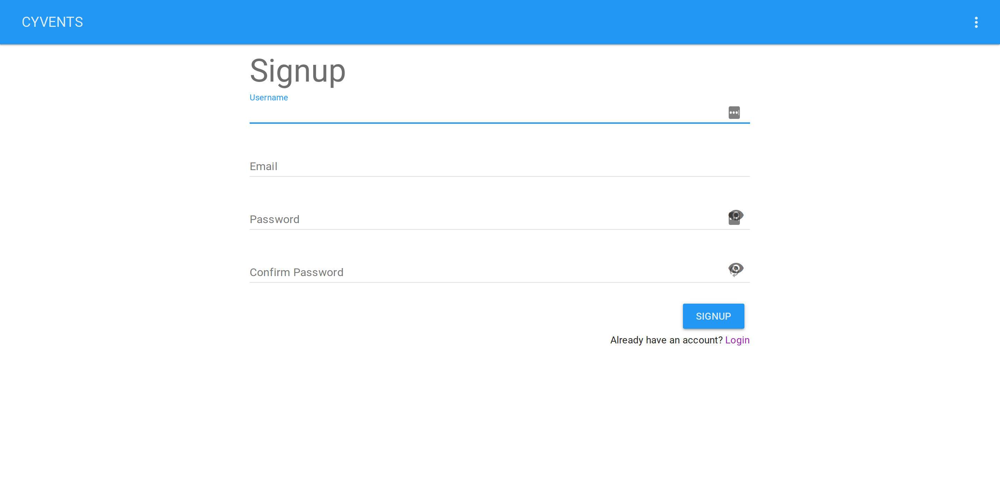
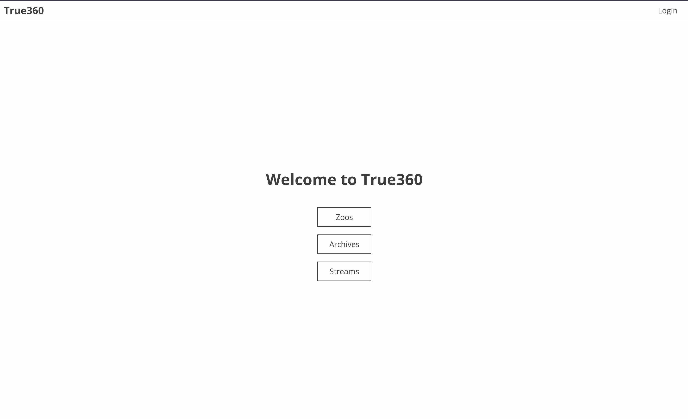

Zach Newton
Front-end Software Engineer
About me
Born and raised in Minneapolis, Minnesota, I love biking, coding, and cooking. In 2015, I started my college journey as an Aerospace Engineering major, but quickly switched to Software Engineering after doing the 36-hour hackathon, HackISU, halfway through the first semester. Shortly after, I interviewed for and received a job at Iowa State Web Development where I worked for about 15 months. There, I learned how much I love making applications that solve everyday dilemnas and, more importantly, are pleasing to look at and use. This love for front-end design led me to a job at Workiva, Inc. as a Front-end Software Engineering Intern, where I worked for 9 months. The next step in my career will be interning at Zendesk in San Francisco, California.
After graduation, I hope to find a job along the west coast, ideally in Seattle, WA. Location is very important to me, especially while I'm young, because I want to be able to enjoy every moment I have while I'm capable of doing anything I want, both at and away from the office. The job is also important to me, with my main criteria being to impact a significant number of people in a significantly positive way. At Workiva, I was able to directly impact the experience and ease of use of software that impacted people around the world. At Zendesk, I will similarly be impacting people in the global workforce, but a few more than at Workiva.
A year ago, I had my sights set on the Big 4 (Amazon, Google, Microsoft, Facebook) because I felt the best way to impact people's lives was to work somewhere that impacts the most people possible. I have now re-evaluated my perspective on what it means to have an impact on the world. Now, I want to work somewhere that will allow me to make a strong individual impact, rather than being lost in a sea of people working on a multitude of products that overall make my contribution relatively insignificant.
Projects
I've done a few cool projects during my time at Iowa State.
Section 16 WGetter (at Workiva, Spring 2018)
Towards the end of my internship at Workiva during the summer/fall of 2017, I was assigned a project to do in the spare time between other projects. The purpose of this new project was to build an application to replace an antiquated, disfunctional python script used by the Workiva salesforce. In order to build this app, I learned how to use Electron to build and package a web app into an installable desktop app that works on all OS's. This was especially important since both Macs and PCs are used at Workiva. The project primarily consisted of me porting the Python script over to JavaScript, then building a UI around that with WebComponents to allow our salesforce team to quickly and easily download customer financial information.
CyGames (at ISU, Spring 2017)
CyGames was a project done for SE 339: Software Architecture at Iowa State University. The grand vision of this project was to build an app that allowed people to quickly hop into multiplayer games of Pong, Snake, Chess, etc. while also being able to chat with opponents and anyone in the lobby. To accomplish this, I learned how to use NodeJS to implement web sockets both for chat and multiplayer gaming. We also used Firebase to implement user Authentication. Our goal was to make the code modular enough that it would be easy to implement more games after the first (pong) worked well.
Go Getter Social (at ISU, Summer 2017)
Go Getter Social was a project done for SE 329: Project Management at Iowa State University. The grand vision of Go Getter Social was to build an app that allowed people to quickly and easily meet up with each other or find out where people were hanging out. For this project, I learned how to use VueJS, a front-end web application framework, as well as many valuable project management tools such as GitLab's issues and project boards. I also learned how to handle being moved from one project to another mid semester, and how that affects team dynamics.
Senior Design
360 Web Cams for Zoos and Aquariums is a project I am doing for SE 491: Senior Design at Iowa State University. The grand vision of the project is to allow zoos to quickly and easily mount 360 cameras in zoo enclosures that they can remotely start/stop streaming from. To accomplish this, I used the technical experience from personal projects and my internship at Workiva, along with project management skills learned at ISU to lead the Front-end side of the project. I also played a large role in overall architecture decisions due to my experience with web development.
Experience
Workiva (Internship, Summer 2017-Spring 2018)
Iowa State Web Development (Part-time, Spring 2016-Spring 2017)
At Iowa State Web Development, I worked as a part-time applications developer. This meant that I was tasked with building web applications for various university clients (typically different departments within ISU) and also internal projects for Administrative Services. Later on in the job, my focus was shifted to building the new university-wide website theme with Zak Bell. The theme we built can be seen at iastate.edu.
My job at ISU Web Dev was crucial in me discovering what I want to do with my Software Engineering degree. When I first went into the major, I thought I might want to build video games so that I could create something that people can interact with. However, after doing web development, I found that I could build interactive applications that solve problems rather than simply providing entertainment. I learned how to write PHP, JavaScript, and CSS. I also learned the crucial skill of using Git. When working on the new iastate.edu theme, I gained a lot of experience sitting in on meetings with ISU IT executives who had to make decisions about the theme, and I was able to give technical insight at said meetings.